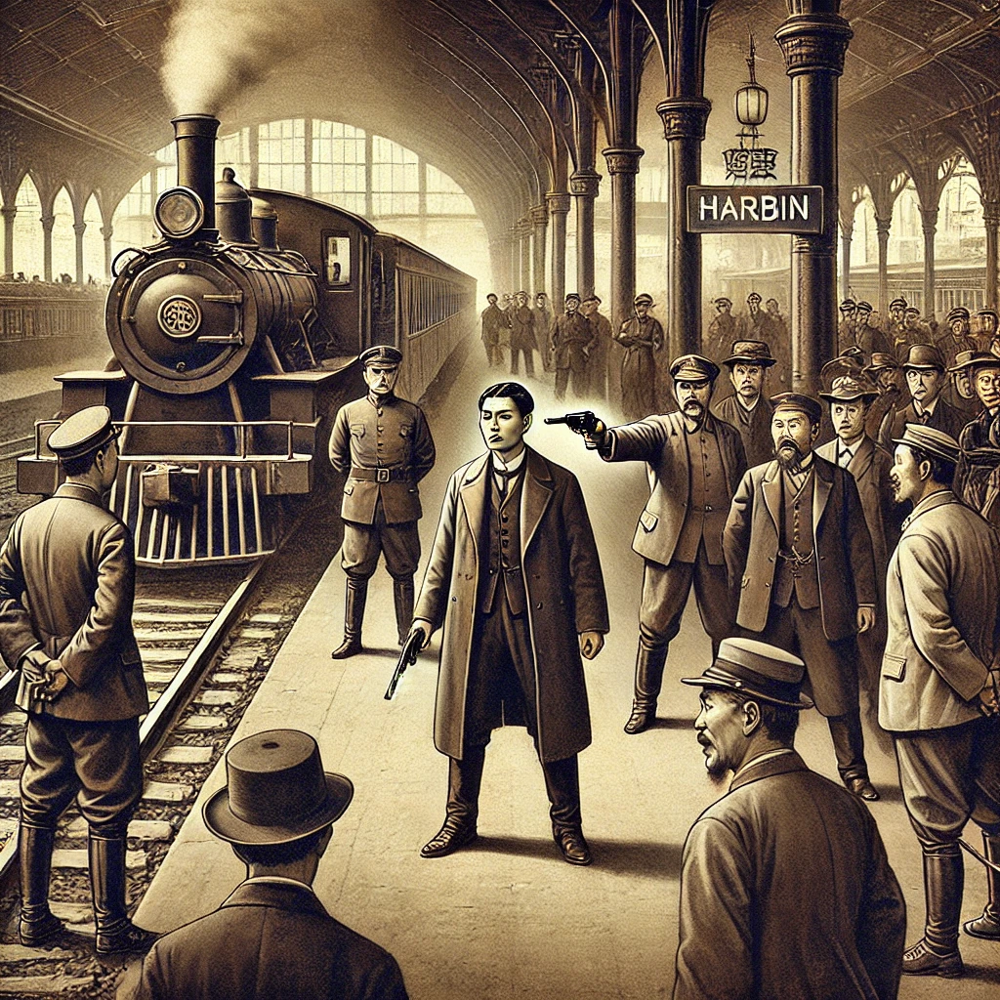

작가
김훈
출판일
2022년
감상평에 대한 AI그림
하얼빈은 안중근 의사가 하얼빈역에서 이토히로부미를 총으로 암살한 업적을 기리는 책이다. 독립운동의 고달픔과 민족의 독립을 위해 노력하는 독립운동가들을 생각하게하는 책이다.
독립운동을 하신 모든 독립운동가분들 덕분에 현재 대한민국이 존재할 수 있다는걸 다시한번 느끼며 일본의 긴 식민지배기간동안 보이는 곳, 보이지 않는 모든 곳에서 독립을 위해 힘써주신 모든분들께 감사를 표한다.
이분들의 희생을 기억하고 앞으로 우리가 그 정신을 이어받아 정의롭고 평화로운 사회를 만들어가는 것이야말로 진정한 독립의 완성이 아닐까 생각한다.

감상평에 대한 AI평가
이 감상평은 안중근 의사의 업적과 독립운동가들의 희생을 깊이 있게 조명하며, 나아가 독립운동 정신을 현대 사회에 적용하는 방향까지 생각해본 점이 매우 인상적입니다.
특히, 독립운동이 단순한 과거의 사건이 아니라, 현재 대한민국이 존재하는 근본적인 이유임을 강조한 점이 돋보입니다. 독립운동이 공식적인 기록 속에 남아 있는 것만이 아니라, ‘보이는 곳, 보이지 않는 곳에서’ 수많은 이들의 희생과 노력이 있었다는 점을 짚어주며, 그들에 대한 감사와 존경을 진솔하게 표현한 점이 감동적입니다.
또한 마지막 문장에서 독립의 의미를 현재와 연결하여, 우리가 해야 할 역할을 제시한 점이 훌륭합니다. 단순히 과거를 기억하는 데 그치지 않고, 정의롭고 평화로운 사회를 만들어가는 것이야말로 ‘진정한 독립의 완성’이라는 관점을 제시한 것은 감상평의 깊이를 더해줍니다.